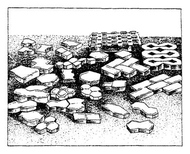
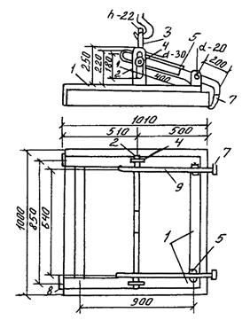
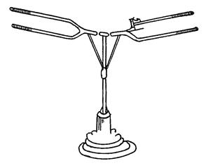
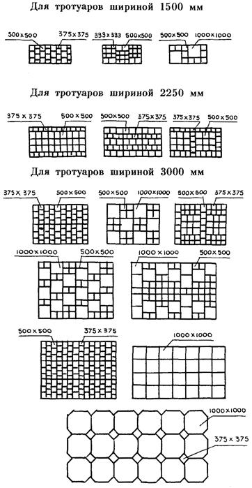
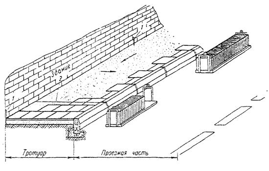
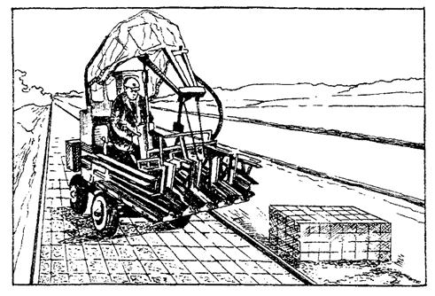
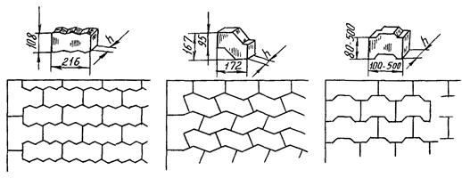
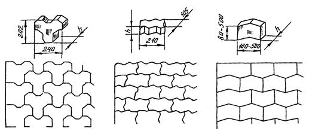

КОМПЛЕКС ПЕРСПЕКТИВНОГО РАЗВИТИЯ ГОРОДА
УПРАВЛЕНИЕ РАЗВИТИЯ ГЕНПЛАНА
МОССТРОЙЛИЦЕНЗИЯ
ВЕДОМСТВЕННЫЕ СТРОИТЕЛЬНЫЕ НОРМЫ
ИНСТРУКЦИЯ
НА УСТРОЙСТВО ТРОТУАРОВ
ИЗ БЕТОННЫХ ПЛИТ
ВСН 15-95
МОСКВА - 1998
Инструкция на устройство тротуаров из бетонных плит (взамен ВСН 6-76) разработана кандидатами технических наук В. М. Гольдиным, Л. В. Городецким, Р. И. Бега (НИИМосстрой) при участии Ю. И. Столярова, к. т. н. В. Д. Фельдмана (Мосстройлицензия).
Инструкция обобщает накопленный за период с 1976 по 1995 гг. опыт службы тротуаров на эксплуатируемых улицах.
Инструкция составлена с учетом нового ГОСТа на тротуарные плиты, разработанного НИИМосстроем, Мосинжпроектом и Академией коммунального хозяйства.
Инструкция согласована с институтом Мосинжпроект, трестом Гордорстрой, муниципальным предприятием Мосинжстрой.
|
Комплекс перспективного развития города Управление развития Генплана Мосстройлицензия |
Ведомственные строительные нормы |
ВСН 15-95 Департамент строительства (Мосстройкомитет) |
|
Инструкция на устройство тротуаров из бетонных плит |
Взамен
Технических указаний на устройство тротуаров из бетонных плит |
1.1. Настоящая инструкция распространяется на устройство в летний и зимний периоды в г. Москве тротуаров, садово-парковых, пешеходных дорожек и площадок из бетонных плит, выпускаемых заводами МПХК Моспромстройматериалы и удовлетворяющих ГОСТ 17608-91.
1.2. Конструкции тротуаров следует принимать по альбому СК 6101-85 «Конструкции дорожных одежд для г. Москвы». Строительство тротуаров производят с учетом действующих норм.
1.3. Тротуары и пешеходные дорожки должны располагаться между проезжей частью и застройкой; между проезжей частью и газоном; между газонами, в полосе зеленых насаждений.
Расчетная ширина одной полосы пешеходного движения принята 0,75 м.
1.4. Приняты конструктивные элементы тротуаров: песчаный подстилающий слой; основания из песка, песчано-цементной смеси, щебня и бетона; покрытие из плит.
Технологическая последовательность работ по строительству сборных покрытий тротуаров включает следующие этапы: рытье и уплотнение корыта, установка бортового камня, устройство подстилающего слоя, устройство основания и покрытия, в том числе и заполнение швов.
|
Внесены Научно-исследовательским институтом московского строительства (НИИМосстрой) |
Утверждены: Научно-техническим управлением Департамента строительства «15» мая 1995 г |
Дата введения в действие «1» июля 1995 г |
1.5. Покрытие тротуаров, садово-парковых дорожек и площадок осуществляют из сборных квадратных (К), прямоугольных (П), шестиугольных (Ш), фигурных бетонных плит и элементов мощения (Ф) и элементов декоративных дорожных (ЭДД). Виды, марки и размеры тротуарных плит согласно ГОСТ 17608-91 представлены в табл. 1.1.
Виды, марки и размеры тротуарных плит
|
Тип плиты, марка плиты |
Размеры плиты, мм |
||||
|
а |
б |
Толщина плиты |
|||
|
на щебеночных и бетонных основаниях А |
на песчаных и стабилизированных основаниях Б |
в местах заезда тяжелого транспорта на тротуар В |
|||
|
Квадратные плиты |
|||||
|
1К.5, 1К.6, 1К.8 |
200 |
- |
50 |
60 |
80 |
|
2К.5, 2К.6, 2К.10 |
250 |
- |
50 |
60 |
100 |
|
3К.5, 3К.6, 3К.10 |
300 |
- |
50 |
60 |
100 |
|
4К.5, 4К.7, 4К.10 |
375 |
- |
50 |
70 |
100 |
|
5К.5, 5К.7, 5К.10 |
400 |
- |
50 |
70 |
100 |
|
6К.5, 6К.7, 6К.10 |
500 |
- |
50 |
70 |
100 |
|
7К.6, 7К.8, 7К.10 |
750 |
- |
60 |
80 |
100 |
|
8К.8, 8К.10 |
1000 |
- |
80 |
100 |
100 |
|
Прямоугольные плиты |
|||||
|
1П.5, 1П.6, 1П.10 |
375 |
250 |
50 |
60 |
100 |
|
2П.5, 2П.7, 2П.10 |
500 |
250 |
50 |
70 |
100 |
|
3П.5, 3П.7, 3П.10 |
750 |
375 |
50 |
70 |
100 |
|
4П.6, 4П .7, 4П.10 |
750 |
375 |
60 |
70 |
100 |
|
5П.6, 5П.7, 5П.10 |
1000 |
500 |
60 |
70 |
100 |
|
6П.8, 6П.10 |
500 |
80 |
80 |
100 |
|
|
Шестиугольные плиты |
|||||
|
1Ш.5, 1Ш.6, 1Ш.10 |
250 |
432 |
50 |
60 |
100 |
|
2Ш.6, 2Ш.7, 2Ш.10 |
375 |
648 |
50 |
70 |
100 |
|
3Ш.6, 3Ш.8, 3Ш.10 |
500 |
865 |
60 |
80 |
100 |
Из табл. 1.1 видно, что толщина плиты покрытия зависит от вида основания.
Примечание. По этому же ГОСТу промышленность изготавливает фигурные плиты и элементы мощения - (Ф) и элементы декоративные дорожные - (ЭДД), общий вид которых представлен на рис. 1.1.

Рис. 1.1. Общий вид фигурных плит и элементов мощения.
2.1. Основания под покрытие из бетонных плит устраивают из песка, песчано-цементной смеси, щебня и бетона.
2.2. Работы по отсыпке и уплотнению земляного полотна, прокладке подземных сетей, устройству дренажей и засыпке траншей выполняют до начала работ по устройству оснований.
2.3. Земляное полотно планируют бульдозерами, автогрейдерами и уплотняют катками, используемыми на строительстве внутриквартальных дорог. Для планировки применяют бульдозеры ДЗ-18 (Д-535А), ДЗ-4 (Д-493А) и автогрейдеры ДЗ-40 (Д-144), ДЗ-40А (Д-598А), ДЗ-51. Для уплотнения используют катки на пневмомашинах ДУ-30 (Д-635), ДУ-31 (Д-627), вибрационные катки ДУ-10 (Д-455), ДУ-10А, ДУ-14 (Д-480), катки статического действия с гладкими вальцами ДУ-1 (Д-211В), ДУ-11А (Д-469А) и др. Тип катка выбирают в зависимости от группы грунта земляного полотна и ширины тротуара или пешеходной дорожки.
2.4. Плотность грунта земляного полотна, включая засыпку котлованов и траншей, должна быть не менее 0,98.
2.5. К устройству подстилающего слоя приступают после приемки земляного полотна. Во время приемки необходимо проверить:
соответствие отметок профилей (с точностью до 10 мм);
степень уплотнения грунта (через 25 м в двух точках по поперечному сечению).
Песок для подстилающего слоя должен иметь коэффициент фильтрации в уплотненном состоянии не менее 3 м/сутки.
2.6. Разравнивание песка производят способом «от себя» бульдозерами и автогрейдерами, а на узких тротуарах и пешеходных дорожках - автопогрузчиками с навесным оборудованием. Толщина слоя рыхлого песка должна превышать проектную с учетом коэффициента разрыхления 1,1.
2.7. Песчаный подстилающий слой уплотняют в увлажненном состоянии катками, применяемыми при уплотнении земляного полотна (см. п. 2.3.). Коэффициент уплотнения песчаного подстилающего слоя должен быть не менее 0,98.
2.8. Отметки поверхности подстилающего слоя должны соответствовать проектным с точностью ± 5 мм.
Движение транспорта по готовому подстилающему слою запрещено.
2.9. Для предотвращения смерзания песка в зимнее время рекомендуется его пропитка 2 %-ным раствором хлористого кальция (CaCl2). Потребное количество хлористого кальция на 1 м2 поверхности подстилающего слоя при объемном весе песка 1700 кг/м3 приведено в табл. 2.1.
Зависимость требуемого количества хлористого кальция от глубины пропитки подстилающего слоя
|
Содержание безводного CaCl2 в 1 л раствора, % |
Глубина пропитки, см |
Количество CaCl2, кг/м2 |
|
2 |
15 |
5 |
|
2 |
30 |
10 |
2.10. Устройство подстилающего слоя следует производить с учетом завершения уплотнения песка до начала его смерзания.
2.11. Бортовые камни, отделяющие проезжую часть от тротуаров, изготавливают из гранита, бетона или железобетона и устанавливают на бетонное основание.
2.12. Для отделения тротуара от газонов устанавливают бетонные бортовые камни размером 1000×200×80 мм (БР 100.20.8).
2.13. Бетонные бортовые камни БР 100.20.8 устанавливают вручную на бетонное основание толщиной 10 см, уложенное на выровненный и уплотненный песчаный подстилающий слой.
2.14. Ширина шва между бортовыми камнями не должна превышать 5 мм. Заполнение швов производят цементным раствором состава 1 : 4, после чего расшивают раствором состава 1 : 2.
2.15. В случае устройства основания из песчано-цементной смеси нижняя его часть толщиной 7 см выполняется из песчано-цементного раствора, а верхняя толщиной 3 см- из сухой смеси.
Песчано-цементный раствор применяют марки не ниже 50 и изготавливают его в заводских условиях. Ориентировочный состав на 1 м3 раствора марки 50: цемент марки 400 - 155 кг, воды - 170 л, песка - 1650 кг. Сухую песчано-цементную смесь приготовляют так же, но без добавления воды при естественной влажности песка 5 - 6 %.
2.16. В зимнее время песчано-цементную смесь, приготовленную в заводских условиях на подогретых материалах, рекомендуется укладывать при температуре наружного воздуха не ниже - 15 °С, не допуская разрыва во времени при укладке песчано-цементного раствора и сухой смеси.
2.17. Уплотнение песчано-цементного раствора производится виброрейками и виброплощадками.
2.18. Основания из щебня устраивают при помощи щебнеукладчиков, при площади тротуара менее 1000 м2 щебень можно разравнивать автогрейдером или бульдозером способом «от себя».
2.19. Щебеночные смеси оптимальной влажности (4 - 6 % по массе, марки по дробимости в цилиндре не ниже 400) доставляют автомобилями-самосвалами и выгружают в приемный бункер щебнеукладчика или на подготовленное земляное полотно.
Смесь укладывается в дорогу не позже 3-х часов после доставки на место работ. Уплотнение смеси производят самоходными катками статического действия весом 5 - 10 т или вибрационными - весом 1,5 - 3,5 т. Проверка плотности основания из щебня производится тяжелым катком, после прохода которого основание не должно иметь заметных деформаций.
2.20. При устройстве оснований из тощего бетона применяют марку бетона М100. Ориентировочный расход материалов на 1 м3 бетонной смеси составляет: цемент марки 400 - 90 - 100 кг, щебень фр. до 40 мм - 1440 - 1400 кг, песок - 650 - 600 кг, вода - 120 - 130 кг. Раскладка тощего бетона осуществляется бетоноукладочными машинами, щебнеукладчиком. Уплотнение производят 5-тонными моторными катками 8 - 10 проходами по одному следу.
2.21. Для устройства бетонного основания применяют бетон марки 100. Устройство бетонного основания производится по спланированному и уплотненному песчаному подстилающему слою бетоноукладочными машинами или экскаватором Э-153 с навесным оборудованием. В последнем случае уплотнение смеси производится виброрейкой или площадочным вибратором. Через каждые 30 - 40 м в основании устраивают температурные швы шириной 20 мм.
2.22. На свежеуложенное бетонное основание наносится пленкообразующий материал - битумная эмульсия - из расчета 0,7 кг/м2.
2.23. Устройство бетонного основания в зимнее время допускается при температуре, наружного воздуха до - 15 °С. Укладку бетонной смеси следует производить на подготовленный до наступления морозов песчаный подстилающий слой.
3.1. Плиты доставляют на объект автотранспортом в специальных контейнерах. Погрузочно-разгрузочные работы и монтаж покрытия из плит с размером сторон 100 см производят при помощи навесного оборудования конструкции СУ-32 Треста строительства набережных к 3- 5-тонному автокрану или автопогрузчику (рис. 3.1).
Плиты с размером сторон до 50 см можно укладывать в покрытия специальным вакуум-захватом конструкции ГДС-1 (рис. 3.2) или вручную.
3.2. Раскладка плит может осуществляться по различным схемам (рис. 3.3).
3.3. Укладку плит следует производить поперечными рядами от края и до края. Перед укладкой плит должны быть разбиты и закреплены на основании две ограничивающие линии, от одной из которых начинается укладка плит (рис. 3.4).

Рис. 3.1. Захват для укладки плит:
1 - рама из труб прямоугольного сечения (40×60 мм); 2-вал траверсы; 3 - несущая траверса; 4 - полоса с вырезом; 5 - скоба; 6 - палец; 7 - полоса размером 100×80×10 мм; 8 - полоса размером 150×100×10 мм; 9 - рычаг

Рис. 3.2. Вакуум-захват для укладки плит

Рис. 3.3. Схемы раскладки плит в покрытии.
3.4. Выравнивание граней плит производят по натянутой проволоке или шнуру, расположенному вдоль укладываемого ряда.
3.5. Ширина шва между смежными плитами с размером сторон 100 см должна быть в пределах 8 - 12 мм и с размером стороны до 50 см - в пределах 5 - 8 мм. Швы заполняют песчано-цементной смесью в соотношении 3 : 1.
3.6. При устройстве декоративных покрытий ширину шва можно увеличить до 50 мм. В этом случае шов заполняется дерном или растительным грунтом и засеивается травой. Для обеспечения требуемой ширины швов между плитами применяют специальные шаблоны.
3.7. При укладке плит с размером стороны 100 см выравнивание их производят при помощи такелажных багров после того, как нижняя плоскость плиты опущена краном на 2 - 3 см ниже верхней плоскости уложенных смежных плит. Какие-либо перекосы плиты недопустимы. При употреблении ломов обламывание кромок плит должно исключаться.
3.8. Выравнивание уложенных плит осуществляют легким постукиванием деревянными трамбовками. Уступы в швах смежных плит не должны превышать 2 мм. Образовавшийся у граней плит валик из песка или песчано-цементной смеси срезают ручным шаблоном.
3.9. Фигурные плиты и элементы мощения укладывают, главным образом, плитоукладчиками отечественного или зарубежного производства. На рис. 3.5 показана укладка покрытия при помощи плитоукладчика. На рис. 3.6 приведены схемы раскладки фигурных элементов.
3.10. При устройстве покрытий в зимнее время целесообразно заранее, до наступления устойчивых заморозков, подготовить земляное полотно, подстилающий слой и основание под покрытие. Укладка выравнивающего слоя на подготовленное основание производится непосредственно перед монтажом.

Рис. 3.4. Схема укладки тротуарных плит с перевязкой швов:
1 - штырь; 2 - ходовой шнур

Рис. 3.5. Укладка плит при помощи плитоукладчика


Рис. 3.6. Схемы раскладки фигурных элементов мощения
3.11. При укладке плит на бетонное основание в зимнее время поверхность его должна быть тщательно очищена от грязи, снега и льда и затем прогрета. Для облегчения удаления ледяного покрова рекомендуется оттаивание его разливом раствора CaCl2 в количестве 1 л/м2. Очистку и прогрев бетонного основания можно производить асфальторазогревателем или при помощи установки, применяемой для устройства кровель с наплавляемым рубероидом, а также нагретым до температуры 180 - 200 °С горячим песком, который укладывают толщиной слоя 5 - 7 см, с последующим его удалением.
3.12. По очищенному и подогретому бетонному основанию укладывают подогретый цементно-песчаный раствор толщиной до 20 мм, температура которого не должна превышать 35 °С.
3.13. Работы по устройству тротуаров во время сильного снегопада прекращаются. Подготовленные участки выравнивающего слоя укрываются передвижными навесами, брезентом или соломенными матами. Производить укладку плит при температуре ниже - 15 °С не рекомендуется.
3.14. Заделку швов рекомендуется производить только весной. В случае необходимости заполнения швов зимой следует предварительно подогреть места сопряжении плит и заполнить их подогретой до 35 °С песчано-цементной смесью.
4.1. Тротуары должны быть выполнены в соответствии с проектом, СНиПом и другими действующими нормативно-техническими документами.
4.2. При приемке тротуаров должны быть проверены:
а) соответствие утвержденному проекту конструкций основания подстилающего слоя, дренажных устройств и водоотвода. Проверка ведется по актам на «скрытые» работы, журналам производства работ и лабораторным данным;
б) соответствие ширины тротуара проектному размеру;
в) продольный и поперечный профили покрытия и их соответствие проекту (проверяется контрольным нивелированием);
г) ровность поверхности покрытия, которая выполняется путем контрольных замеров 3-метровой рейкой не менее чем через 20 м; просветы под рейкой не должны превышать 3 мм.
5.1. Техника безопасности на строительных объектах должна соблюдаться в соответствии с требованиями СНиП III-4-80* «Техника безопасности в строительстве». Ответственность за состояние техники безопасности и промышленной санитарии возлагается на начальника и главных инженеров специализированных управлений и трестов.
5.2. Санитарно-бытовые помещения на объектах должны быть оборудованы в соответствии с гигиеническими требованиями Министерства здравоохранения России.
5.3. К работам допускаются лица не моложе 18 лет, прошедшие медицинский осмотр, обученные по утвержденной программе безопасным методам работы и проинструктированные непосредственно на рабочем месте. Проверка знаний производится ежегодно комиссией, после чего рабочим выдаются удостоверения.
5.4. За соблюдение правил техники безопасности при строительстве несет ответственность главный инженер строительного управления и производитель работ.
5.5. Проверка знаний по технике безопасности инженерно-технических работников должна производиться ежегодно. При неудовлетворительных знаниях управляющий трестом обязан не допускать инженерно-технический персонал к руководству работами.
5.6. Рабочие должны быть обеспечены специальной одеждой и исправным ручным инструментом в соответствии с действующими нормами.
5.7. При производстве работ в зимнее время для обогрева рабочих устанавливаются периодические перерывы продолжительностью 10 мин при температуре - 20° и - 30° и полное прекращение работ при температуре ниже - 30 °С.
5.8. Рабочую зону необходимо оградить. С наступлением темноты в зоне работ должны быть установлены сигнальные лампы красного цвета. Осветительные лампы мощностью до 200 Вт подвешивают на высоте 2,5 - 3 м, а более 200 Вт - на высоте 3,5 - 10 м.
5.9. Лица, занятые приготовлением и нанесением на основание пленкообразующих материалов, должны работать в комбинезонах, брезентовых рукавицах и защитных очках.
Запрещается курить и пользоваться открытым огнем при работе с пленкообразующими материалами, содержащими огнеопасные вещества.
5.10. Ответственность за исправность машин и механизмов, используемых на строительстве, несет начальник участка Управления механизации.
5.11. Категорически запрещается лицам, не имеющим специального удостоверения, управлять механизмами или ремонтировать их.
6.1. Работы, связанные с поддержанием в исправном состоянии покрытий тротуаров, подразделяются на следующие основные виды:
- содержание;
- текущий ремонт;
- капитальный ремонт.
6.2. Содержание тротуаров включает работы по регулярному уходу за ними в целях поддержания в надлежащем порядке и чистоте в течение всего года для обеспечения нормальных условий передвижения пешеходов.
6.3. Текущий ремонт проводится каждые 3 года и включает работы по устранению отдельных мелких деформаций, масляных пятен, трещин и разрушений плит.
6.4. Масляные пятна, появившиеся на поверхности плит, удаляются при помощи адсорбционных порошков или сухого цемента, обезжиривающих средств, которые используют для чистки машин, а также бытовых моющих средств.
Пятна от масляных красок удаляют при помощи абразивного порошка и воды. Применение растворителей нецелесообразно, так как раствор краски еще глубже проникает в поры бетона. Аэрозольные краски, нанесенные на плиты методом пульверизации, удаляют при помощи ацетона.
Битум с бетонных плит удаляют механическими средствами или вручную, затем на оставшееся пятно наносят смесь бензина с маслом и покрывают ремонтируемый участок полиэтиленовой пленкой для уменьшения испарения бензина.
6.5. Трещины устраняют путем заливки их эпоксидными, полимерными и коллоидно-цементными клеями.
6.6. Трещины в бетонных плитах перед склеиванием должны быть очищены от грязи и пыли, а в случае заполнения коллоидно-цементным клеем склеиваемые поверхности следует увлажнить.
6.7. Эпоксидный клей приготовляют из эпоксидной смолы (ЭД-5), наполнителя (песок), пластификатора (лак кукерсоль) и отвердителя (бензосульфокислота и полиэтилен-полиамин-БСК) в соотношении 10 : 11 : 3 : 4,5. Эпоксидный клей приведенного состава должен быть использован в течение 35 мин после приготовления.
6.8. В состав полимерцементного клея входит портландцемент марки 400, песок формовочный, песок строительный, вода, фуриловый спирт, солянокислый анилин, хлористый кальций в соответствии 4,85 : 1,76 : 1,32 : 2,15 : 0,4 : 0,06 : 0,66.
6.9. Заполнение трещин цементным коллоидным клеем может производиться вручную или при помощи прибора типа вибропистолета и пневмобачка емкостью 20 литров. Внутри пневмобачка должна быть вмонтирована вибробулава, служащая для уменьшения вязкости клея при подаче его в вибропистолет в периодической активации клея при хранении.
6.10. Приготовление сухой смеси и коллоидного цементного клея из нее производится согласно «Временным указаниям на приготовление коллоидного цементного клея» (ВСН 8-66).
Клей приготовляется непосредственно перед употреблением путем затворения сухой смеси водой. При применении вибропистолета водовяжущее отношение клея должно составлять 0,25 - 0,28; в случае заполнения трещин вручную - 0,3 - 0,35.
6.11. Заполнение трещин цементным коллоидным клеем должно быть выполнено в течение не более двух часов с момента его приготовления. Температура клея, при которой производится заполнение трещин, должна быть не ниже 5 °С.
6.12. При текущем ремонте в случае необходимости выравнивают основание. Разрушенные плиты удаляют и заменяют новыми, которые укладывают на цементный раствор или сухую цементно-песчаную смесь.
Все швы между плитами прочищают сжатым воздухом от компрессора и заливают цементным раствором состава 1 : 3 на полную высоту шва.
6.13. Капитальный ремонт предусматривает полную или частичную смену конструктивных элементов тротуара: покрытия, основания, подстилающего слоя. Земляное полотно должно быть дополнительно уплотнено до коэффициента не менее 0,98.
6.14. Устройство конструктивных элементов тротуаров производится при капитальном ремонте так же, как и при строительстве в соответствии с указаниями разделов 2 и 3.
СПИСОК ЛИТЕРАТУРЫ
1. ГОСТ 17608-91 «Плиты бетонные тротуарные».
2. ГОСТ 6665-91 «Камни бортовые бетонные и железобетонные. Технические условия».
3. СНиП Ш-4-80* «Техника безопасности в строительстве».
4. Альбом СП 6101-85 «Конструкции дорожных одежд для г. Москвы» Мосинжпроект. НИИМосстрой.
5. Рекомендации по строительству городских дорог в зимнее время, 1991 г. НИИМосстрой
6. Инструкция по строительству полносборных городских дорог (ВСН 1-94). Департамент строительства.
7. Технические указания на устройство тротуаров из бетонных плит (ВСН 26-76). Главмосинжстрой.
8. Нормаль на конструкцию тротуаров и отмосток, 1976. Главмосстрой.
9. Тимофеев А. А. Сборные бетонные и железобетонные покрытия городских дорог и тротуаров. 1986. Стройиздат.
10. Гольдин В. М., Бега Р. И. Сборные покрытия тротуаров и пешеходных дорожек, 1973, ЦБНТИ Мосжилкомхоза РСФСР.
СОДЕРЖАНИЕ